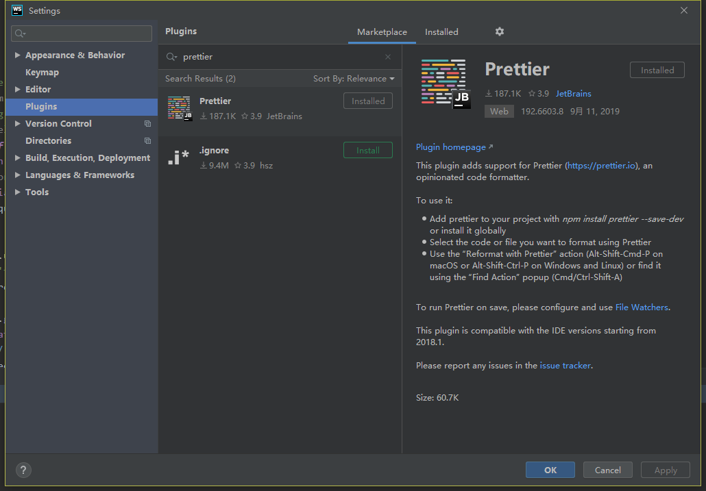

团队统一代码风格
统一代码格式，让开发间合作更顺畅
安装
VSCode

WebStorm
安装 Prettier Plugin

配置
# .prettier.js
module.exports = {
printWidth: 80,
tabWidth: 2,
useTabs: false,
semi: true,
singleQuote: true,
quoteProps: "as-needed",
trailingComma: "es5",
bracketSpacing: true,
arrowParens: "always",
}VSCode
# settings.json
{
"window.zoomLevel": 1,
"vetur.format.defaultFormatter.html": "prettier",
}
由于IDE的配置会影响到prettier，所以只保留以上配置WebStorm
IDE默认配置使用
WebStorm
- Mac：Alt + Shift + Cmd + P
- Windows: Alt + Shift + Ctrl + P
或
- Mac:CMD + Shit + A
- Windows:Ctrl + Shift + A，然后输入 Prett…
或
- Double Shift(连按两次 Shift)，然后选择 Action，然后输入 Prett…
VSCode
Shift + Alt + F
或
- Mac：CMD + Shift + P -> Format Document
- WIndows：Ctlr + Shift + P -> Format Document
自动校正
使用husky + lint-staged，在pre-commit时会自动校正代码。
# package.json
{
"devDependencies": {
"husky": "^3.0.5",
"lint-staged": "^9.2.5",
},
"husky": {
"hooks": {
"pre-commit": "lint-staged"
}
},
"lint-staged": {
"*.{js,scss,json,md,vue}": [
"prettier --write",
"git add"
]
}
}脚本命令
npm run format格式化src下的文件*.{js,scss,json,md,vue}
# package.json
{
"scripts": {
"format": "prettier --write src/**/*.{js,scss,json,md,vue}"
},
}